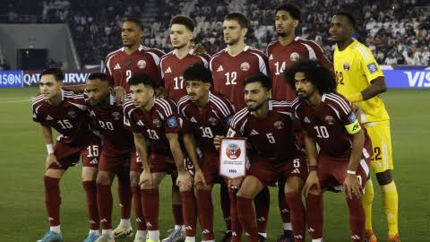

Qatar 🇶🇦
Sin títulos📍 Sede / Ciudad: Doha (Lusail Stadium) / Al Khor (Al Bayt Stadium)

🇶🇦 Selección de Qatar en la Copa del Mundo
Qatar hizo historia al convertirse en el primer país de Oriente Medio en organizar una Copa Mundial de la FIFA en 2022. Desde entonces continúa impulsando el desarrollo del fútbol nacional con una nueva generación de jugadores.
Participaciones (2)
2022, 2026.
Estadísticas Mundiales
0 Victorias | 0 Empates | 3 Derrotas
⭐ Mejor resultado: Fase de grupos
Clasificación al Mundial 2026
Qatar obtuvo su clasificación representando a la Confederación Asiática de Fútbol (AFC), consolidándose como una de las selecciones emergentes del continente.
Historia en la Copa
Su debut mundialista fue como país anfitrión en 2022. Aunque no logró superar la fase de grupos, la experiencia impulsó el crecimiento del fútbol catarí y fortaleció su proyecto deportivo a largo plazo.
💡 Curiosidad
Qatar ganó la Copa Asiática de 2019 derrotando a Japón en la final, obteniendo el primer gran título internacional de su historia.
Jugadores Convocados
- Meshaal Barsham
- Saad Al Sheeb
- Bassam Al-Rawi
- Boualem Khoukhi
- Abdelkarim Hassan
- Homam Ahmed
- Assim Madibo
- Karim Boudiaf
- Akram Afif
- Almoez Ali
- Hasan Al-Haydos
- Ahmed Alaaeldin